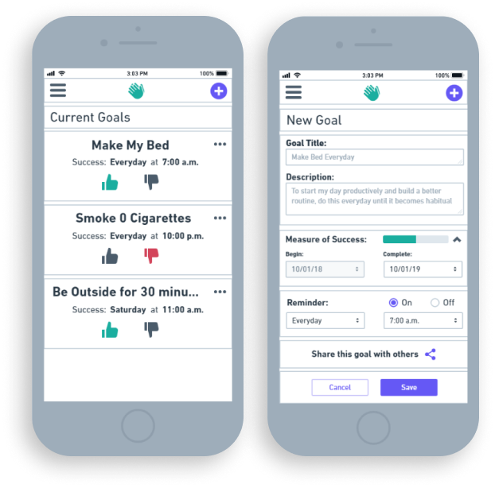
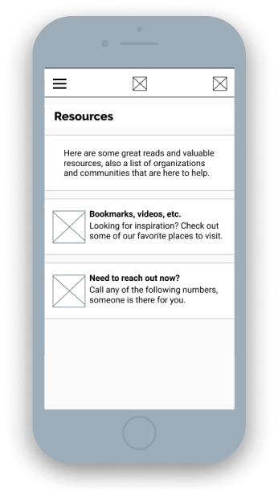

Set goals. Write notes.
Share and discover resources to begin a more thoughtful and healthy state of mind.
Duration
·2 months
Tools
·Figma
·InVision
·Maze
·Whimsical
Deliverables
·User Surveys
·User Stories + Personas
·User Flows + Sitemap
·Competitive Analysis
·Branding + Style Guide
·Visual Design
·Wireframing
·Lo + Hi Fi Mockups
·Prototype + User Testing
Roles
·UX Research + Design
·Branding Identity
·Visual Design
Problem:
·Provide a resource that promotes daily mindful activities and to encourage a Growth Mindset.
·How to share techniques that help deal with anxiety and bad habits.
·Ethical Design: How to gain trust and market this app- not as a therapist, but as a friend.
Solution:
·Design an app with features to set Goals and Journal.
·Promote accountability and sharing with a Forum and Goal-share features.
·Help motivate by using positive language, bright color scheme, successful status bars and local resources
RESEARCH&DISCOVERY
User Survey
90% of Users currently set goals on a regular basis.
Goal Book will be an app for those already setting goals and New users alike
65% Ended a habit by setting a specific goal duration/end-date.
People already use this technique, while a large amount of others
could benefit from a feature setting time-based goals.
50% want to begin writing about their goal progress + setback
Showing a need for either a Note-taking or Journaling feature.
80% inform a friend or family member about their desired goal.
20% have nobody to contact when feeling defeated. Designing inclusively, this need is important to address.
55% only resource is browsing the internet; can benefit from an organized and compiled list.
(blogs, videos, scientific papers, practitioners, hotlines, etc)
These responses show user-interest for goals and journaling-
Next, a SWOT Analysis to research how other habit-tracking apps present their features.
Competitive Analysis
Loop Habit Tracker
Very minimal and easy to navigate
Lack of bloat allows to quickly set goals
Habit Hub
Extensive amount of features + customization
Feels trusted and professional; very attractive and contemporary visual design
Many features causing bloat and confusion when navigating
Habit Bull
Discussion forum is great, and not found in other apps
Past Data & Streaks are presented well
Aesthetic feels unprofessional and dated
Looking at these differences in addition to survey responses gave insight to a strong MVP and other features:
Hierarchy: Emphasize Goals and Journal as main features; design these to be quickly accessible and customizable. Light/Attractive UI: Brand Identity to feel trusted and professional. Minimal: Avoid bloat to navigate simply; to feel easy-going and open Positive re-inforcement: Rewarding language, fun illustrations, local resources Extra features: Forum, Device- Syncing, Goal-Data + previous success rates
User Personas
Matthew / 21 / Advanced
Wants to set time-based goals and be reminded to perform tasks
Wants to quit cigarettes and track his progress
Wants to share his goals with friends and family
Angela / 32 / Advanced
Tired of ‘exclusive’ applications and only supports ethical designs
Needs to write and compile notes in an organized but simple format
Deletes applications if they’re too bloated or un-attractive
Jacq / 41 / Beginner
Wants to end bad-habits but needs to feel supported while doing it
Wants a community they can relate and talk to anonymously
New technolgy is difficult to learn- benefits greatly from a simple and thoughtful UX
Personas give a real-life base for my User Stories, compiling all this previous research-
writing User Stories gave insight to the hierarchy and MVP: Time-based goals: Set goals, reminder system Feel supported: Share with family or have a place to reach out, ie: forum, resources Emphasize Notes and Goals: High priorrity, not feel surrounded by bloat or hard to find Emphasize inclusivity: Bad-habits and starting new goals is a difficult topic, inviting colors and “positive/successful” language
User Stories
A focus on being simple and direct. Finding the MVP for my product
with User Stories- I then created user flows for the most important features.
User Flows helped set the basis for the information architecture.
USER
As a New User
As a Returning User
As a Returning User
As a Returning User
As a Returning User
As a Returning User
TASK
I want to create an account
I want to set goals in a timer/reminder format
I want to set goal-specifications
I want a journal to write about my goals and thoughts
I want a suggested list of mindful habits
I want to share my goals with friends or family
PRIORITY
High
High
High
High
Medium
Medium
INFORMATIONARCHITECTURE
User Flows
A focus on being simple and direct. Finding the MVP for my product, created
user flows for the most important features.User Flows helped set the basis for
the information architecture.
Wireframing & Content Strategy
Started with Lo-Fi Wireframes for my User Flows
and quick informal testing to see how users want to interact with the app.

Testing Wireframes:
Current Goals / New Goals screen are confusing on where interaction should be (too busy, no emphasis)
Dropdown menu purpose is unclear
Current Goals list is very large, what happens when there are 5, 10+ goals?
Writing the content based off my own personal experience gave me a way to
present this as helpful to people trying to end-habits and reach new goals.

Content Strategy:
Friendly and Inclusive
Gain user’s trust by being transparent and using affirming language.
To feels honest and positive:
Market it as a ‘friend’ rather than relying on therapy or mental-health collaborators
VISUALDESIGN
Brand Identity
Working simultaneously with Mockups- I focused the identity to be friendly, trusted,
and inviting- the Branding went through many iterations, to find my Brands ‘voice’
Logo & Name
To be light-hearted but professional, many names and logos explored:
“Goal Guide”, “Goal(ed) Mine”, “Light Space”, “Mind Well” and “Helping Hand”
Exploring “The Helping Hand” with more detailed logos and mockup iterarations-
the purpose and tasks performed ultimately was unclear and confusing
Back to sketching: I designed many logos for all of these names and nothing felt right.
Step away from play-on-words/puns
Goal Book shows a clear purpose and experience: Goals, Write, Read, Edit, “Flip-Through”
"G-Arrow" [Primary]
Minimal, Contemporary, “Bubbled”, Light
G for Goal / Strong and sturdy shape
Arrow representing the ability to change and move forward.
Success-Pen [Secondary]
Icon, Scalable, Simple, Fun
Flag to represent “win” or “success” / Fun (Games, Adventure)
Pen symbolizing writing, editing, and general book functions
Color
Working simultaneously with Lo-Fi Mockups, I experimented and
peer-reviewed multiple color options. Balance between not-too-serious and professional.
Many iterations later, landed on this palette, for a few reasons:
Bright, Positive, Fun, Healthy, Inviting
Blue/Green: Common in Business, Health and Wellness “Springtime”: New beginnings, change, clean, light, space
Typography
Unique, Playful, Sturdy:
Raleway
Professional, Typewriter:
Merriweather
Familiar, Recognizable:
Roboto
Call to Action
Primary CTA: Minimal, Bright, Recognizable. White rectangle, Pink border and Bold Text
Navigation CTA: Minimal, All-Caps, High Contrast, Bold Text
Mockups
Designing my visual mockups alongside my Branding:
The following mockups are listed chronologically, and for brevity- only the main screens are presented.
I began with a mix of Material Design 1 + 2, as it is trusted, efficient, and accessible.
Accessibility Concerns: Check color contrasts, yellow in particular
Material Design: Changed Cards, Margins, & Heights to follow MD2 guidelines
Material Design: Changed CTA and Typography to follow MD2 guidelines
Landing: Too busy, confusing. Remove background image
Brand Voice: Branding needed to re-iterate. New Logo and Colors
Large Iteration: Leave MD, begin PWA: Personal Brand focus
Pen Logo ‘complete’
Emphasize Brand voice: Inviting, Bright, Open
Focused on getting Goals(Home) list ‘just right’
Move hamburger, add Nav-bar
Goal Data: Change Title, Checkmark, Margins
Nav-bar: Added Todays/All Goals, Moved Main to bottom
CTA: New, Branded
Goal Data: Moved to dropdown, moved edit button, size accordingly
Accessibility: Main BG to #FCFCFC; Success bar outline remove
Mockups for the majority pages ready to move forward, I finished the remaining pages for a testable prototype.


 Bright, Positive, Fun, Healthy, Inviting
Bright, Positive, Fun, Healthy, Inviting